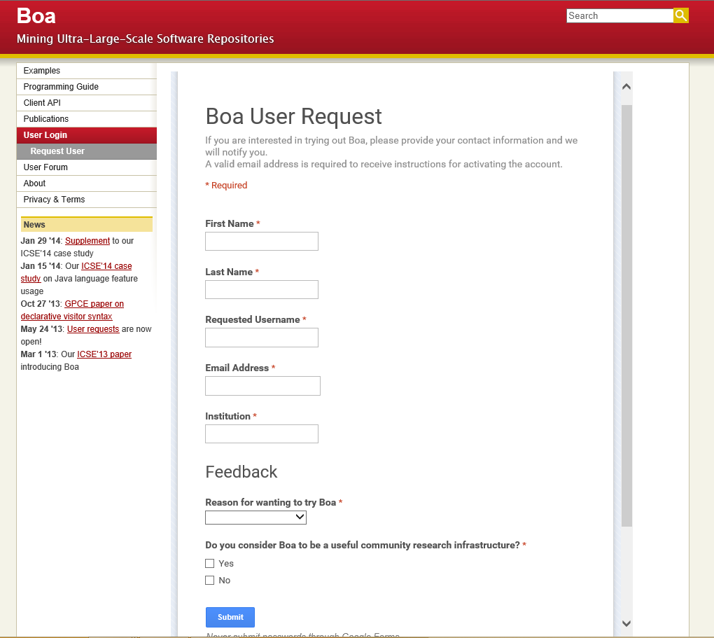
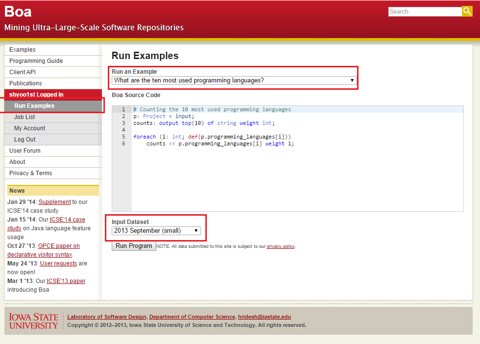
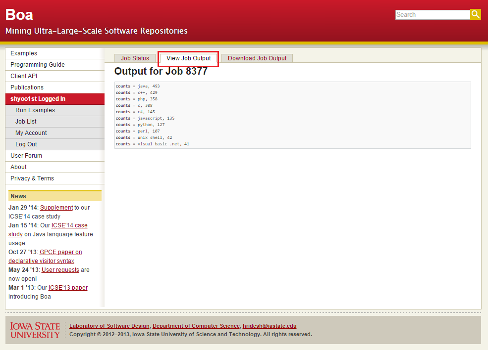
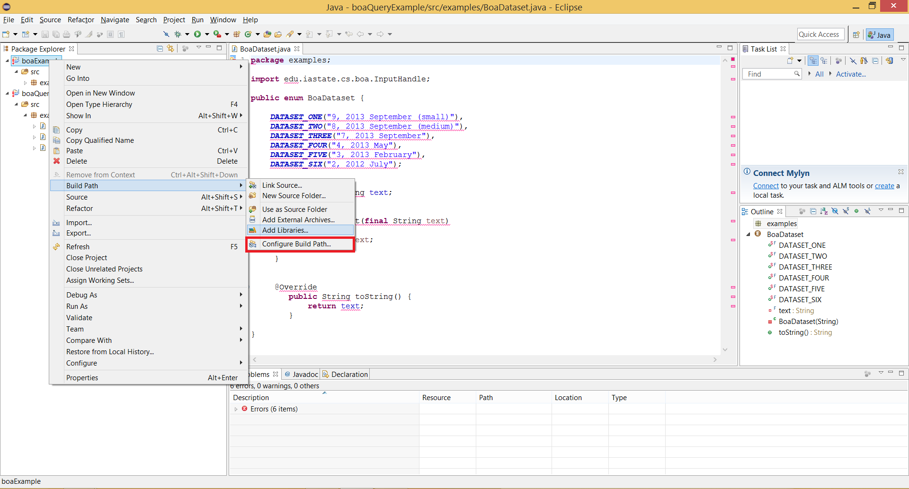
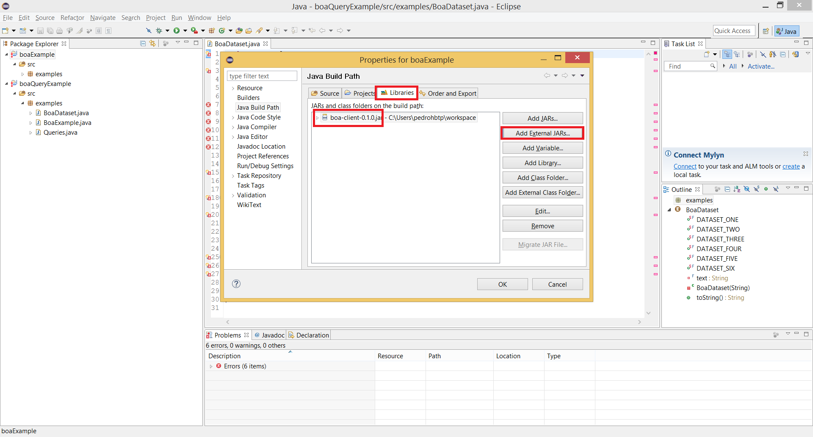
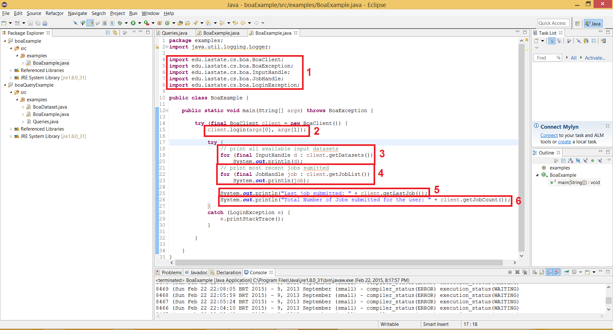
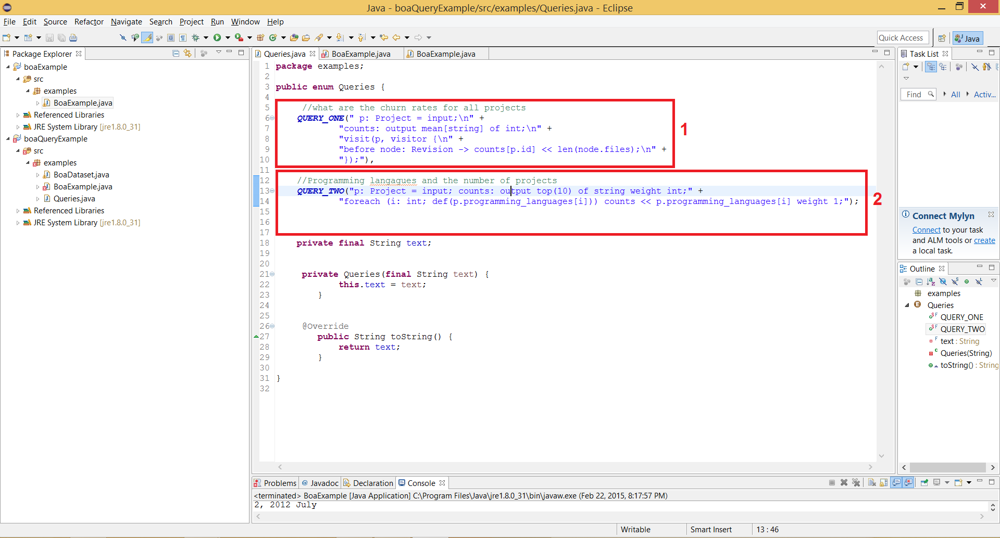
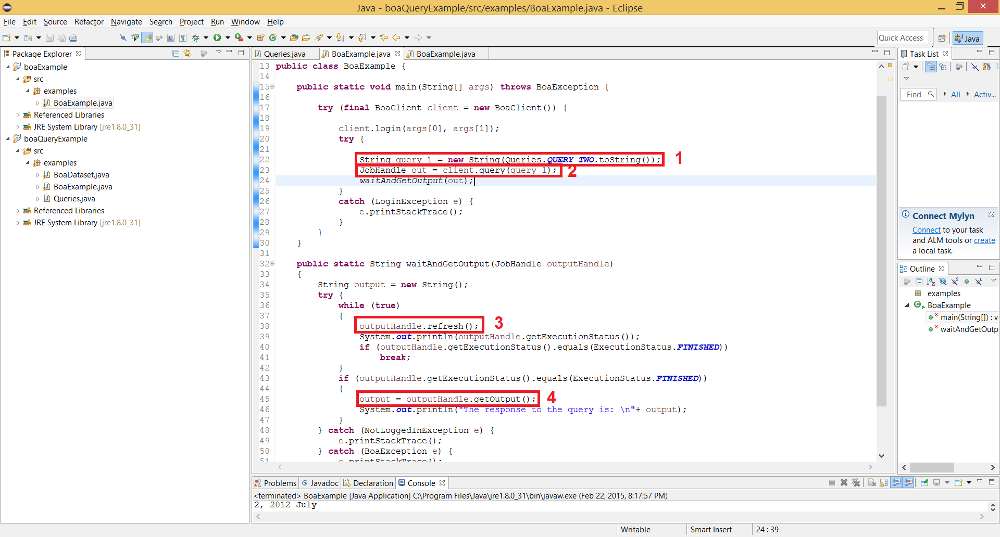
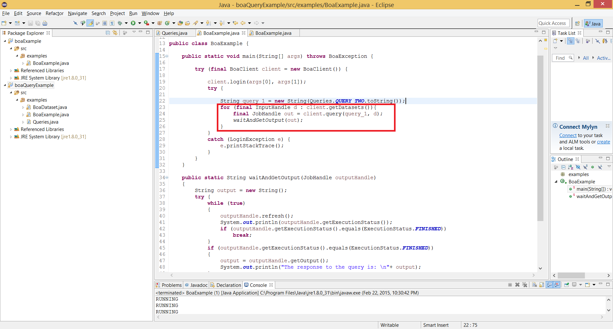

Boa is a domain-specific language and infrastructure that eases mining software repositories
In this tutorial, we will learn how to use the Boa language and its infrastructure to analyze open source projects. The language is specially designed to support software engineering researchers to do empirical studies on software repositories without spending too much time in writing many lines of code. If you use this language, you will be able to test your idea, get the results in a very short time and even ensure the reproducibility of the results.
Less than 5-10 lines of code
Running on Hadoop MapReduce (< 1min)
Projects: 699,331, Revisions: 15,063,073
Same input, Same output
Mining software repositories is a crucial part of doing empirical studies in the software engineering field. A software repository keeps every code change and the related information. A researcher may want to understand the evolutionary procedure of software development and find important factors which affect software quality from the history of the repository. However, setting up the environment for crawling data from the repositories requires lots of time and efforts. The Boa language provides various kinds of ready-to-use information and prompt responses, usually less than 1 minute.
The Boa language is provided as software as a service. You need to create an account to use the service. A good news is that they are very responsive and you will get an account in a day. Request a user account
Once you get an account, you may run various examples available on the website. A user edits the code in the web browser directly. Also, the user chooses the input data set. The 'small' input data set helps you get the result in a short time when you are prototyping your idea.
However, note that they don't recommend to use the 'small' input data set for research because the 'small' data set must be removed at any time.
You can either view the first 64KB of output data or download the data.
Unfortunately, the output format generated by the Boa infrastructure is not ready to use. I made a simple conversion tool to generate a CSV format output. In case that your data set is too large to be processed by a web browser, a conversion script for node.js is also available. Click here!
Let's get started with the simplest example in the Boa language. One may want to know which languages are used most in the repositories. First of all, we need to define an input variable p, which has the project information Project, and an output variable counts with the output modifier and sum[string] of int type. The Boa infrastructure assigns the input value automatically, the input variable declaration statement is almost idiomatic. Besides, the type of output variable is interpreted as: counts[ key ] = value
A project may consist of multiple programming languages so we need a foreach statement to iterate over a list of languages. The def function checks whether the value is defined or not. The sum is an output aggregator whose key type is string in this example. The operator << takes a value and sends the value to the aggregator.
Here is available metadata in the Boa language. The full specification is available on the website.
Name, Description, Topics
Donations, Licenses
Homepage URL, Project URL
Interfaces
Unique ID, Code Repositories
Created Date
Programming Languages
Databases, Operating Systems
Audiences, Developers, Maintainers
Which kind of repository system is used?
{ GIT, SVN, ... }
Repository URL
Revision History
Unique ID, Committed Date
Author, Committer
Changed Files
Commit Log Message
Type of Change
{ ADDED, DELETED, MODIFIED }
Kind
{ BINARY, SOURCE_, TEXT, ... }
Filename
Note I've tested the checked items' possible values because those meanings seem uncertain to me.
The Boa language also supports source code level analysis if you use domain-specific functions. For example, the function getast(file: ChangedFile) : ASTRoot? returns a file's AST.
The available types are: Namespace, Declaration, Type, Method, Variable, Statement, Expression and Modifier
For example, dead code analysis (unreachable code) is possible. The ability to access AST strengthen the language's usefulness.
The Boa language's grammar is based on the Google's DSL, Sawzall's one. At a first glance, it seems that it is a mixture of C (semicolon, block statements) and functional languages (type specification).
The variable p whose type is Project is defined as an input. The Boa language will feed the input value automatically and note that the type is not an array type.
The variable counts is defined as an output variable. In the Boa language, there is no explicit print statement. After the program execution, it prints every output variable into a text file. The sum means that it aggregates the value(int type) by applying summation operator according to its key(string type). It is similar to HashMap<string, int> counts; in Java language.
If you are not interested in entire output data, you may try the top output aggregator. This aggregator returns top 10 items of the output data. However, the type string weight int does not have a key and it is more likely to be a pair of string and int. Therefore, the output format is slightly different. Here is an example of how to use an aggregator that takes a weight type output variable.
Note that the output, counts[] = java, 50692, does not have a key. In the previous example, its output, counts[actionscript] = 1634, has a key, the language name actionscript.
| Name | Type | Description |
|---|---|---|
| sum | output sum [indices] of T | A sum of the data, of type T. |
| mean | output mean [indices] of T | An arithmetic mean of the data, of type T. |
| set | output set [param] [indices] of T | A set of the data, of type T. If [param] is given, the set can have at most that many elements. |
| collection | output collection [indices] of T | A collection of data points. No aggregation. |
| top | output top [param] [indices] of T [weight] | A statistical sampling that records the top [param] number of elements, of type T. |
| bottom | output bottom [param] [indices] of T [weight] | A statistical sampling that records the bottom [param] number of elements, of type T. |
| minimum | output minimum [param] [indices] of T [weight] | A precise sample of the [param] lowest weighted elements, of type T. |
| maximum | output maximum [param] [indices] of T [weight] | A precise sample of the [param] highest weighted elements, of type T. |
Quantifiers in Boa provide an easy way to specify loops with conditions. The general form of quantifiers looks like this:
Inside the loop, the quantifier variable var is declared. The type of var is usually int. The variable var will be used in the condition and it determines whether the statement will be executed or not. For example, if you want to count a programming language when it contains 'java', you can write code like this:
Likewise foreach quantifier, exists and ifall quantifiers are provided as syntactic sugar.
Boa language also supports a visitor pattern as syntactic sugar. It is useful to traverse AST nodes. If the before matches the type, it runs the body before the node is visited. The after runs the body after the node is visited. If you don't want to continue traversing nodes, you can explicitly call stop function in the body.
Here are three simple examples to use project metadata. We will use the fields topics, developers and log (commit messages).
We assume that generic type contains at least one '<' character.
Note that the code visits every single program statement.
The isfixingrevision function applies a set of regular expressions to determine whether the revision is fixing one or not. (heuristic)
How can we get the relative percentage of revisions that fix bugs?
This example is imprecise. Why? 1) Non-java file can be counted if the path contains '.java'. Need to use strrfind instead of strfind 2) Though the file name starts with 'test' or contains 'test', we can't guarantee that the file is for test class. Need to use imports field in ASTRoot? 3) A single test file can have multiple test cases. Need to examine the AST in method level. All things are possible to be resolved in the Boa language.
Boa offers a Java API to integrate its functionality with the user's project. Here we describe how to obtain the API, connect to the project, some of its most important features and finally how to run queries with it.
In this tutorial, we use eclipse IDE to show the process. JRE 1.7 or higher version is required.
The API offers a few classes. The name and a brief descriptions of the most important can be seen below. For more information, visit the link: Boa Java API
| Class | Description |
|---|---|
| BoaClient | It is the main class that is used to access the API |
| InputHandle | It references one of the datasets in offered by Boa. For example, it can be the database of 2013 May |
| JobHandle | Used to perform operations or get information on a job. For example, it is possible to get the job status using it. |
The BoaClient class is the class that is used to login on Boa’s service and to retrieve information about your account. Some of its main methods are described above. All of its description can be seen at: BoaClient
| Method | Description |
|---|---|
| close() | closes the connection |
| login(String username, String password) | Receives username and password to establish session |
| getDatasets() | Gives the list of all datasets that Boa makes available. For example:
9, 2013 September (small) 8, 2013 September (medium) 7, 2013 September 4, 2013 May 3, 2013 February 2, 2012 July |
| getDataset(String name) | Receives the name of the dataset, for example, 2013 May and returns an InputHandle object for that dataset |
| query(String query, InputHandle dataset) | Receives a Boa query in the format of a string and an InputHandle. Submits it to be treated in their servers. It return an object of the type JobHandle. If no InputHandle is specified, it uses the latest dataset as default. |
After opening a session, it is possible to submit queries using the Client class and its query() method. The method returns a JobHandle class where its methods offer a way to get information about the job. Some of its main methods are listed in the table below. For more information, visit the link: JobHandle
| Method | Description |
|---|---|
| refresh() | Refreshes the data that is stored in the JobHandle object. |
| getExecutionStatus() | Returns the execution status of the job. There are 4 possible values: ERROR, FINISHED, RUNNING, WAITING |
| getUrl() | Gives the URL of the job, such that it is possible to check it is possible to manage it on the web interface |
| stop() | If the job is still running, stops it. |
| delete() | Deletes all the information about the job from the server. |
Here we present two examples using the Java Boa API. One example is retrieving account information using the Client class and the other submits queries to the server such that the output can be used by the user.
For the examples, we use eclipse IDE. Before presenting the examples, we have to set up the environment to use the library. The Java library is available on their website as a Java JAR file. The link to download it is the following: Download
After downloading it, create an Eclipse Java project and add the library to the build path.
The pictures below show how to do so.


In this first introductory example, we show how to log in and retrieve information using the BoaClient class.
The information retrieved is: all the datasets available, all the most recent jobs submitted by the user, the one most recently submitted and the overall number of jobs of the account.
The figure below shows the code used to perform it.

Each of the labels in the picture indicate an important aspect of the code. The description and the output of each is the following.
Shows how to log in Boa’s service using its BoaClient class and login() method.
The username and password are passed as arguments of the method.
It calls the getDatasets() method which returns a list of datasets available. We print one by one.
9, 2013 September (small) 8, 2013 September (medium) 7, 2013 September 4, 2013 May 3, 2013 February 2, 2012 July
8474 (Sun Feb 22 22:17:52 BRT 2015) - 9, 2013 September (small) - compiler_status(FINISHED) execution_status(WAITING) 8473 (Sun Feb 22 22:14:41 BRT 2015) - 9, 2013 September (small) - compiler_status(FINISHED) execution_status(FINISHED)
8474 (Sun Feb 22 22:17:52 BRT 2015) - 9, 2013 September (small) - compiler_status(FINISHED) execution_status(RUNNING)
Total Number of Jobs submitted for the user: 82
The next step after being able to log in into Boa’s servers is to submit a query and be able to get its output into java’s data structures. The queries are written in Boa’s native language and are passed as a string.
The key method to do so is the key method is query(). Its first argument is a string that represents the query. Its second argument is the selected data set as an InputHandle object. If the dataset is not given, it uses the most recent one as a default.
The first action to take is to create valid queries using Boa’s syntax. After we check that the queries are valid using the web interface, we put the query in a Java string.
The picture below shows to queries that were put into an ENUM to be accessed by other objects.
The two red boxes are two distinct simple queries that we can use to test the Java API
We can now access these queries and submit them to get the output.
In the case below we choose to use the second query for 10 most used programming languages.
Now, a maybe more interesting application of the Java API is to automatically perform queries for multiple datasets.
Previously, in example 1, we already saw how to obtain all the datasets available in Boa. Now we saw how to submit a query to obtain its output and put into a java structure.
It is possible to combine both to perform queries for all the databases or a subset of them.
The picture below shows the previous example with a small change to do the same query in all the datasets.
The marked piece of code shows how we use the same loop used before to extract all the datasets using client.getDatasets(). Then we call out method that outputs each result.
A domain specific language is, literally to say, specialized to a particular application domain. Unlike a general purpose language, it has some limitations as a programming language. It could be Turing-complete or not Turing-complete. However, the domain specific language has its own special advantages in its special field.
The Boa language is based on the language Sawzall from Google. It supports statistical aggregation of values read or computed from the input. A Sawzall program processes one record at a time and it does not preserve any internal state between records. It is well suited for execution as the Map phase of a MapReduce. The output aggregators are for the Reduce phase in the MapReduce.
(Opinions) In this tutorial, we have learned the Boa language and its infrastructure and how to analyze software repositories in a short time. However, one may argue that they could provide a library to users to access their structured dataset instead of inventing a new language, even though the Boa language is not completely from scratch. But if they do so, the conciseness will be weakened. At least, a user needs to 'weave' other libraries to retrieve datasets and to do distributed computation. This framework successfully abstracts the details of crawling, parsing repositories and doing a MapReduce job on the backend. Therefore, a software engineering researcher can focus on thinking high-level questions without being disturbed by other miscellaneous things.
Any suggestions and pull requests are welcome! (github repository)